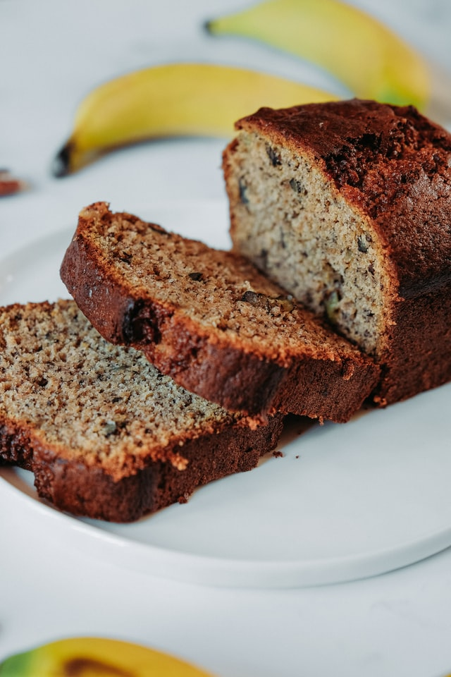

High Protein Banana Bread

Description
"Banana bread is a timeless way to dispose of ripe bananas, but old-school banana bread recipes are often riddled with staggering amounts of sugar and butter. This au naturel banana bread, inspired by Protein Pow's protein-baking wizardry, will taste so banana-y and delicious that you wouldn't believe it's not terrible for you."
Ingredients
- 2 medium bananas
- 1⁄2 cup rolled oats
- 3 whole eggs
- 2 egg whites
- 1⁄2 cup milk
- 1 tsp baking powder
- 2 scoops vanilla whey protein powder
- Optional: Walnuts
Steps
- Preheat oven to 325 degrees F.
- Mash the bananas up really well, and whisk in the eggs and milk.
- Blend the rest of the dry ingredients into the mix until it takes on a batter-like consistency.
- Spray a loaf pan and pour in the batter.
- Bake the banana bread for about 35-40 minutes, or until a fork comes out clean when you stab it. One loaf makes about nine 1/4-inch slices.
Original Recipe